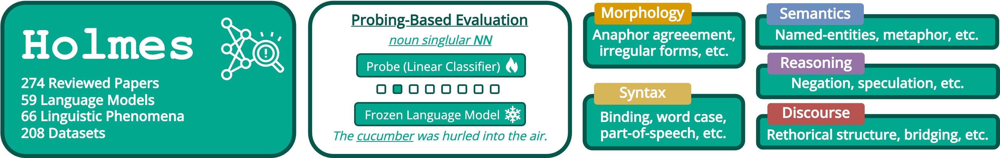

Holmes 🔎 is a research project focusing on the assessment of the linguistic competence of language models regarding morphology, syntax, semantic, reasoning and discourse phenomena.
Along with the benchmark itself, we provide different resources.
📚Benchmark
The Holmes 🔎 benchmark features over 200 dataset covering 66 phenomena for morphology, syntax, semantics, reasoning, and discourse.
Using classifier-based probing, Holmes 🔎 directly assess the linguistic competence of language models without tangling them with other abilities, like following provided instructions in prompting-based evaluations.

The **Holmes Leaderboard** provides an interactive overview of evaluating over 50 different language models for Holmes 🔎 and its counterpart FlashHolmes ⚡ - optimized for efficiency.
Using the **Holmes Explorer**, one can delve into more detailed results by comparing single datasets, phenomena or phenomena types.
Enable the fast evaluation of your favorite language model, we provide code to run Holmes 🔎 or FlashHolmes ⚡ with no more than one command.